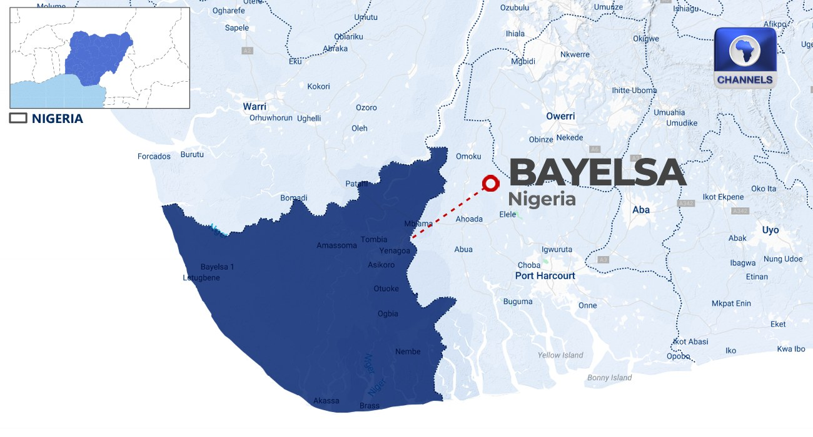

Tinubu Mourns Bayelsa Boat Victims, Orders Rescue Agencies To Recover Bodies

President Bola Tinubu has mourned four people who died when a boat carrying scores of passengers capsized near Ukubie in Bayelsa State’s Southern Ijaw Local Government Area. The passengers were travelling to a funeral in the community on Friday, November 20, 2026. Some people were rescued, while others remained missing as search and rescue operations continued that day.
The Bayelsa State Police Command said the boat was travelling from Ayama community to Ukubie for a burial ceremony when it capsized at about 11 a.m. A preliminary police report indicated that the vessel had developed a mechanical problem while navigating the waterways.
Tinubu said he was deeply saddened by the incident and had directed relevant federal disaster response agencies to work together on recovery and rescue efforts. He expressed sympathy to the families of those affected, the Bayelsa State government and residents, and singled out Governor Duoye Diri in his condolences.
The president also directed that a presidential campaign rally scheduled for Ibadan, Oyo State, on Saturday, November 21, be held without much fanfare in honour of those who died and in sympathy with their families. He prayed for the deceased and for comfort for their relatives.
Source: Channels TV